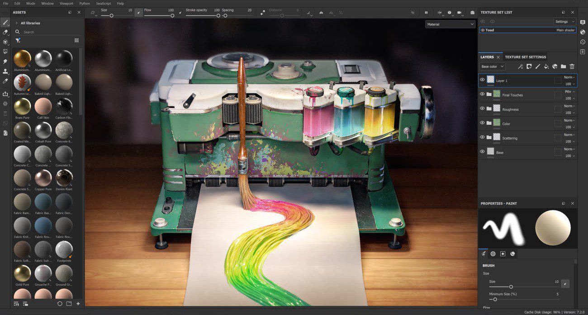

Substance 3D Painter is a 3D painting software allowing you to texture and render your 3D meshes.
This documentation is designed to help you learn how to use this software, from basic to advanced techniques.
If you have any question that is not answered in this manual feel free to ask on our Forum. You can also download our Physically Based Rendering guide if you wish to learn more about PBR.
